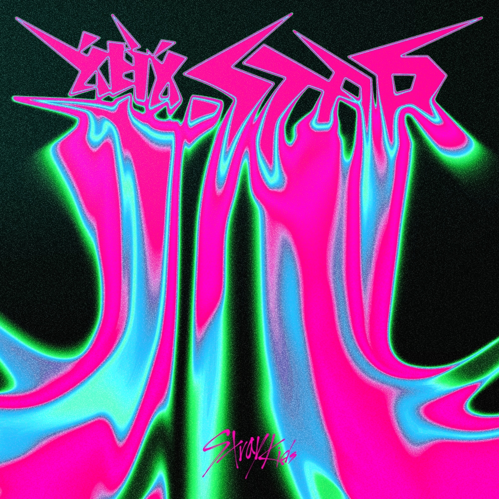

Discography
[MINI] 樂-STAR

- 樂-STAR
- "樂-STAR" is a new album that will be released about five months after the release of its third full-length album and has organicity with its previous work, "★★★★★ (5-STAR). Along with the meaning of being special people who know how to enjoy themselves, he expressed his bold ambition to become a rock star who is rich in an era. In particular, I can feel the group's confidence in making music that can be enjoyed with all listeners in the world from the bold message of the album, "Our rock continues under any circumstances."
RELEASE DATE 2023.11.10
TYPE electronica
- MEGAVERSE
- LALALA
- BLIND SPOT
[EP] 5-STAR

- ★★★★★ 5-STAR
- he new album "★★★★★ (5-STAR), which has a unique charm as if it were a stamp of "Stray Kids" from the album list, is the first full-length album to be released in about two years since its second full-length album "NOEASY" in August 2021. The five full-filled stars intuitively show the speciality of Stray Kids and catch the eye by expressing the theme of the title song "Special," "the most unusual and the brightest among the special kids," in a unique and pleasant way.
RELEASE DATE2023.06.02
TYPErap/hip-hop
- S-Class
- Super Bowl
- ITEM
[MINI] ODDINARY

- ODDINARY
- "ODDINARY" allows you to feel the essence of Stray Kids, which has the unique characteristics. The album's name was completed by combining two English words, "Odd" and "Ordinary," which mean "weird" and "ordinary," respectively, and "ordinary" all of us have strange sides. In other words, it sends a message that "the strange thing is the ordinary thing."
RELEASE DATE2022.03.18
TYPEDance
- Maniac
- Venom